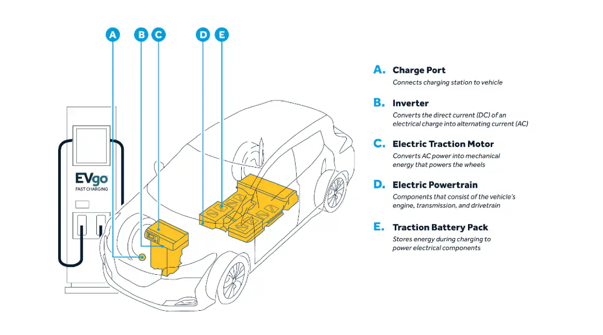
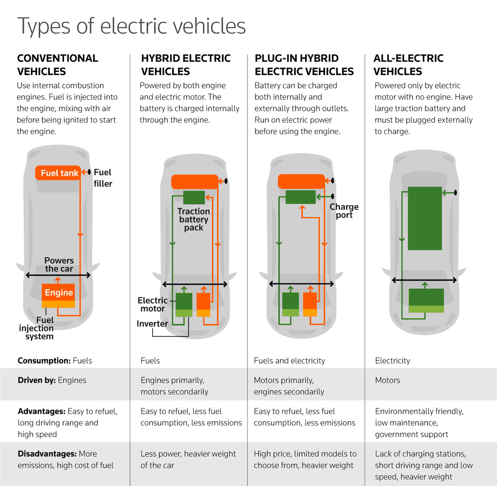
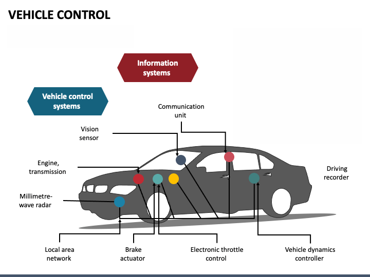

Electric vehicles are transforming the automotive landscape, being widely accepted as a sustainable alternative to fossil fuel cars. Their increased adoption has made us write this article to understand the importance of electric vehicle design and functionality. Before understanding how they work, we must first know the components of an electric vehicle.
Key Components of an Electric Vehicle
Battery
A battery is like a fuel tank in which electricity is stored. Just like you fill tanks before going outside battery is needed to be recharged. It supplies electricity to all the important parts wherever needed. The battery is connected with wires and all the power-related things happen inside it.
Electric Motor
The electric motor is like the heart of any electric vehicle. It operates on the principle of electromagnetic induction. This motor is responsible for converting electrical energy into mechanical energy, providing the necessary motive power to drive the vehicle. A motor is a device that rotates when an electric current is applied.
Generator
The generator plays a crucial role by converting mechanical energy back into electrical energy. This is particularly important for energy recovery systems, enhancing the vehicle's efficiency. It is used for saving the energy and recharging the battery when needed.
Cooling System
Electric vehicles utilise both air-cooling and water-cooling methods to regulate the temperatures of their components. Proper cooling is essential to maintain optimal performance and longevity of the vehicle’s motor and battery.

Transmission System
One of the significant advantages of electric vehicles is the elimination of the clutch and gearbox. Speed control is efficiently managed through a motor controller, which adjusts the motor’s speed directly, simplifying the transmission system.
Driving System
The driving system in electric vehicles includes the chassis, axles, wheels, and suspension. This system transmits the torque generated by the motor to the road, ensuring smooth and efficient vehicle movement.
Steering System
The steering system maintains and alters the vehicle’s driving direction. It includes mechanisms for coordinated wheel movements, ensuring stable and responsive handling. It also makes the driver able to go left and right when needed. Failure in the steering system means you are going straight to heaven or hell.
Brake System
Electric vehicles incorporate both friction brakes and regenerative braking systems. While friction brakes are standard, regenerative braking allows for energy recovery, converting kinetic energy back into stored electrical energy during deceleration.
Electrical Equipment
Electric vehicles are equipped with a range of electrical components, including batteries, generators, lighting systems, and various instruments. The battery is the primary power source, essential for driving and operating all onboard systems.
Power Flow and Energy Management
Battery as Primary Power Source
The battery is very important for an electric vehicle’s power system, supplying the energy needed to drive the motor and operate auxiliary systems.
Energy Recovery
During braking and coasting, electric vehicles can recover energy through regenerative braking systems, which convert kinetic energy into electrical energy, enhancing overall efficiency.
Heat Dissipation
Effective heat dissipation is crucial to maintaining battery performance. Advanced cooling systems ensure that the battery operates within safe temperature ranges, prolonging its lifespan and reliability.
Vehicle Types and Architectures

Single Battery-Powered
Some electric vehicles rely solely on a single battery pack as their power source. This design is straightforward but may face limitations in terms of range and power output.
Hybrid Power Sources
To address the limitations of single-battery systems, some electric vehicles incorporate hybrid power sources, combining batteries with supercapacitors or flywheels. This approach improves performance and extends driving range.
Transmission Designs
Electric vehicles can be categorized based on their transmission systems. Some retain a mechanical transmission, while others adopt transmission-less designs, relying solely on motor controllers for speed regulation.
Differential Designs
Electric vehicles may feature differential-based designs or differential-free designs, where each wheel is driven by an independent motor, allowing for precise control and enhanced handling.
Wheel-Mounted Motors
In some configurations, motors are mounted directly onto the wheels, known as hub motors. This design reduces mechanical losses and enhances energy efficiency.
Key Technologies for Electric Vehicles

Advanced Battery Management
Effective battery management systems are critical for monitoring and optimizing battery performance, ensuring safety, and prolonging battery life.
Integrated Vehicle Control Systems
Modern electric vehicles utilize integrated control systems to manage various functions, from power distribution to regenerative braking, enhancing overall efficiency and performance.
Lightweight Design Strategies
To counterbalance the weight of the battery pack, electric vehicles employ lightweight materials and design strategies, improving efficiency and driving dynamics.
Conclusion
Understanding these components and advanced technologies of electric vehicles is essential as they continue to evolve. These vehicles represent a significant milestone toward sustainable transportation, promising a cleaner and more efficient future for the automotive industry.